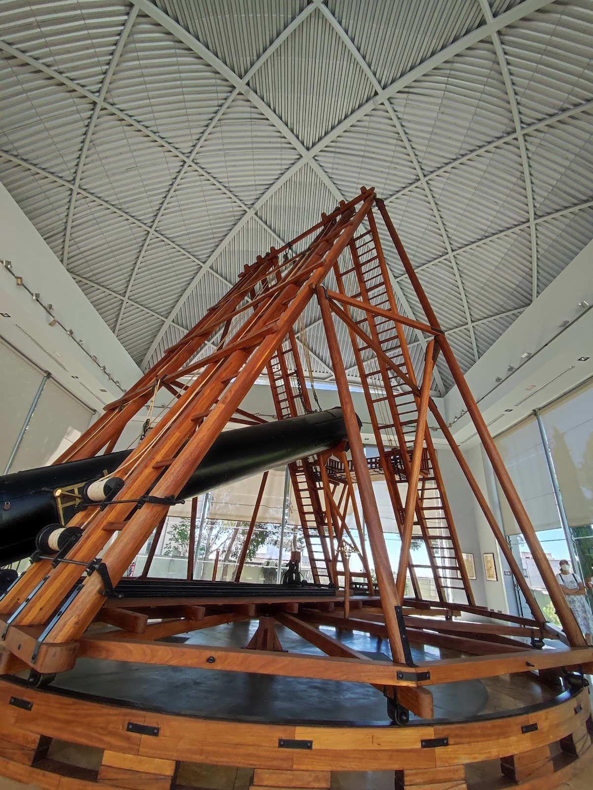
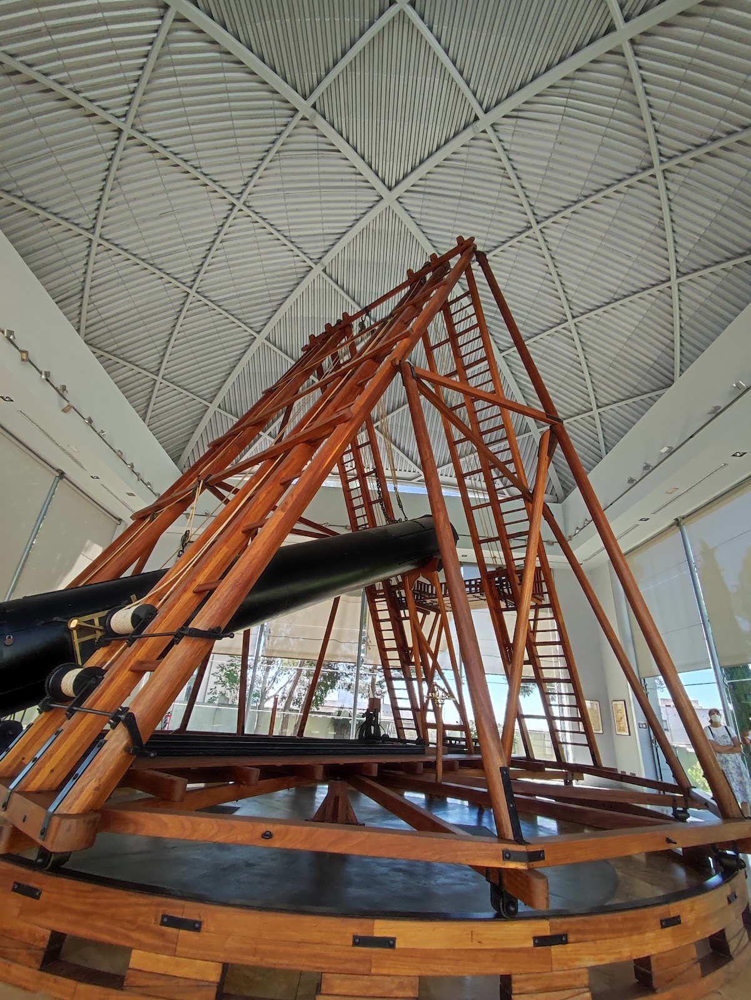
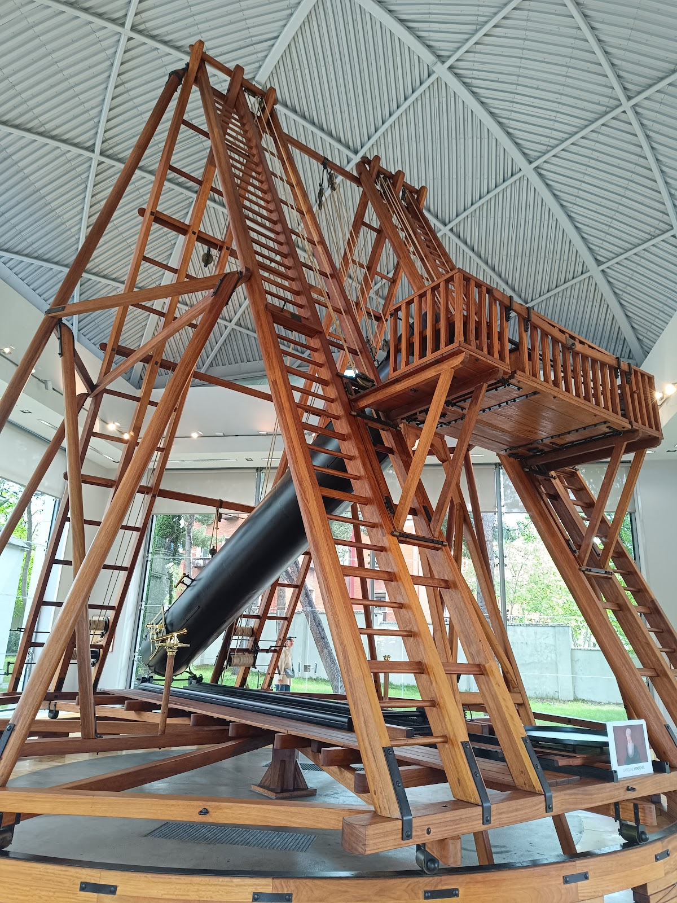
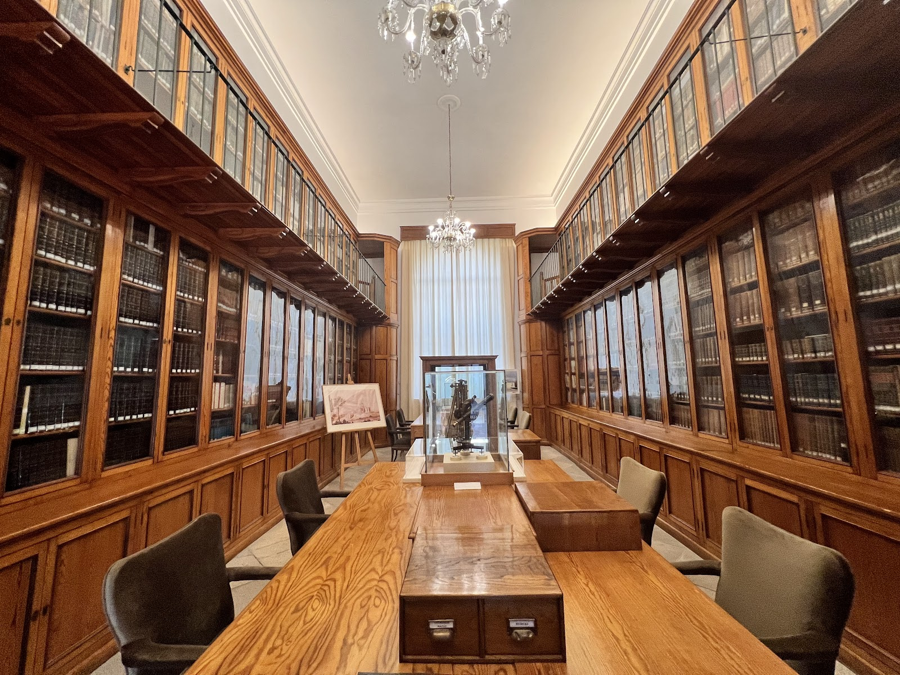
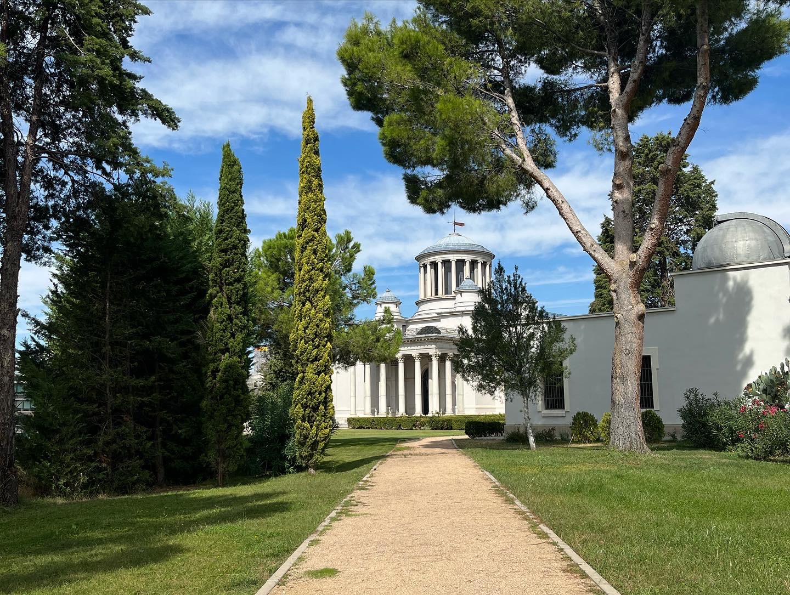
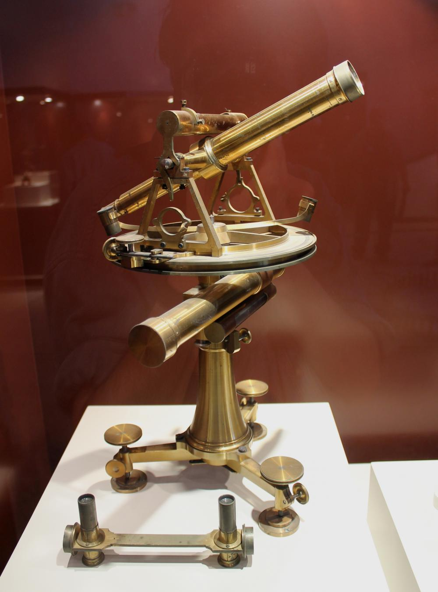
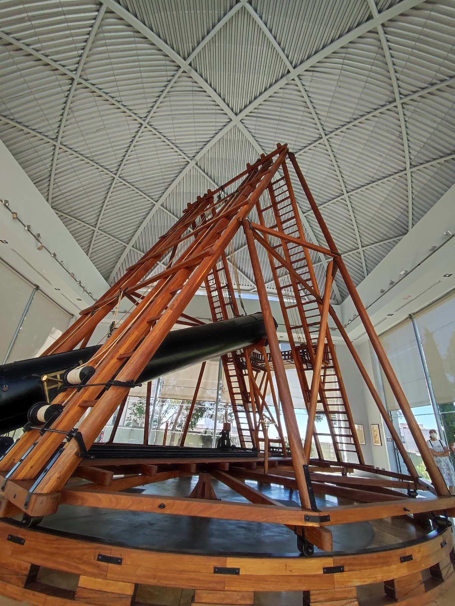

Galería
 





Centro Astronómico fundado por Carlos III en el siglo XVIII
Construido como iniciativa de Carlos III, a sugerencia de Jorge Juan, el Real Observatorio de Madrid, ubicado en el parque de El Retiro, fue inaugurado en 1790. La idea inicial era que formase parte de un "Eje (o Colina) de las Ciencias" junto al Gabinete y Academia de las Ciencias (en el edificio que posteriormente se convertiría en el Museo del Prado) y el Real Jardín Botánico.
En cuánto a la arquitectura, fue diseñado por el arquitecto Juan de Villanueva empleando un estilo neoclásico, consistente en un pórtico con columnas toscanas y el empleo de una grán cúpula central.
Actualmente es empleado como sede del Observatorio Astronómico Nacional, perteneciente al Instituto Nacional de Geografía. Donde se desempeñan diversas ciencias como la astronomía, sismología, cartografía o metereología.
Se encuentra ubicado al lado del parque de El Retiro, consulta el mapa para orientarte. Dirección: C/ Plaza del Observatorio 5, 28014, Madrid.

“Todas las verdades son fáciles de entender una vez descubiertas; la cuestión es descubrirlas”